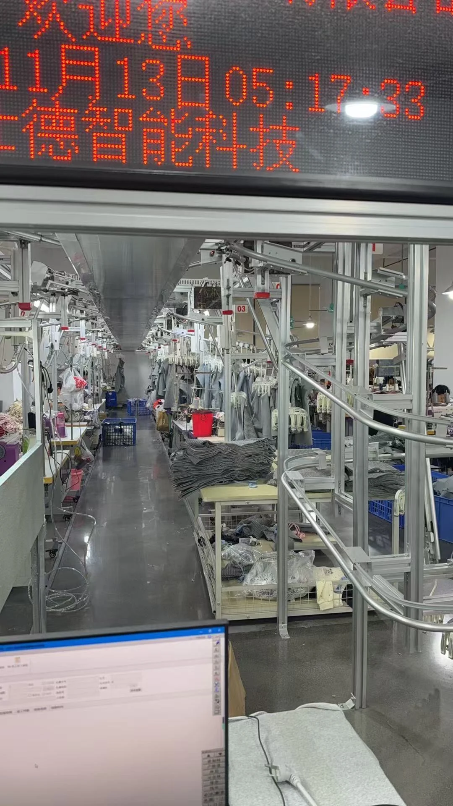

TWO DISTINCT RANGES. ONE MANUFACTURING PARTNER.
XK Apparel and Clothing Company祥康制衣
Developed around your ideas.
Made in Guangdong, China.
Little lives.
Big possibilities.
Toddler & children’s apparel. Everyday favourites,
seasonal layers and room to grow.
 AI-GENERATED CAMPAIGN CONCEPT02 / ACTIVE & CASUAL
AI-GENERATED CAMPAIGN CONCEPT02 / ACTIVE & CASUALMade for
movement.
Activewear, casualwear & team uniforms.
Fresh energy for brands, teams and retail.
MEET XK · 祥康制衣
Your collection.
Step by step.
We develop and manufacture kidswear, activewear, casualwear and team uniforms for brands, importers and retail buyers.
Bring a complete specification or an early idea. We’ll work through the details with you.
- 01
Your brief
Start with a tech pack, sketch or collection idea.
- 02
Materials & details
Choose fabrics, colours, trims and finishes.
- 03
Sample & refine
Review the fit and construction before approval.
- 04
Production
Move into cutting, sewing and finishing after approval.
Your design, developed for production.
Work from your tech pack and agreed specifications.
Build a direction together.
Explore the silhouette, materials and details with our team.
INSIDE OUR PRODUCTION LINE
Inside the line.
Closer to the making.
Overhead carriers move garments between staffed workstations. See the handling rails, production stations and line displays in these photographs from the factory floor.



Factory photography supplied by XK. Automation refers to garment handling between staffed workstations. Third-party labels belong to their owners; their appearance does not imply endorsement.